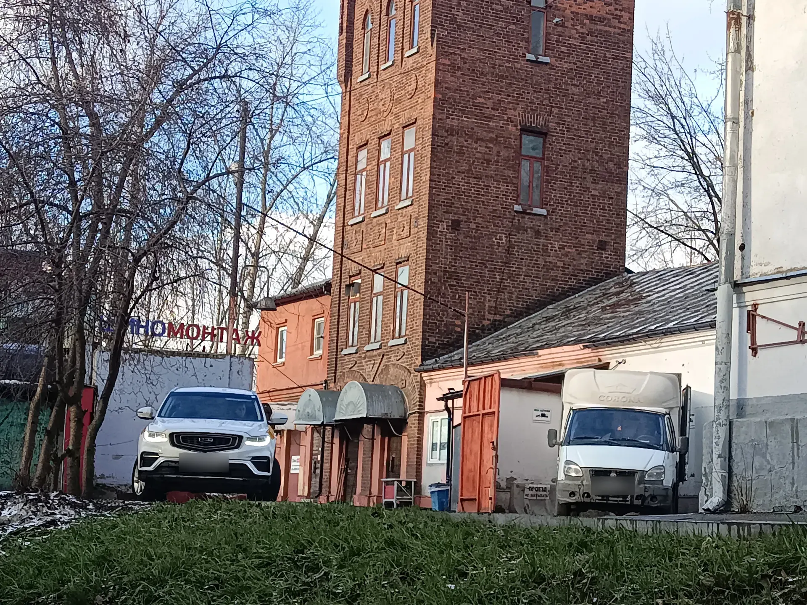
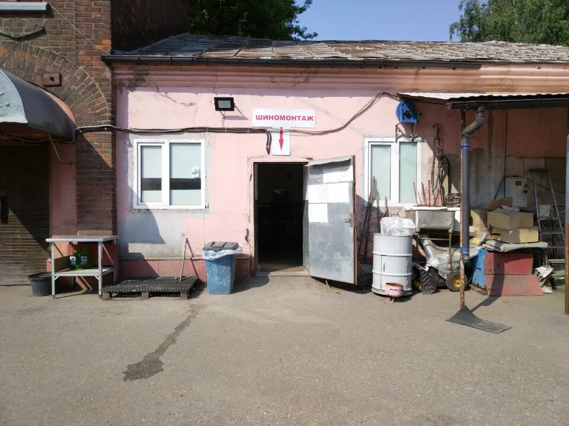
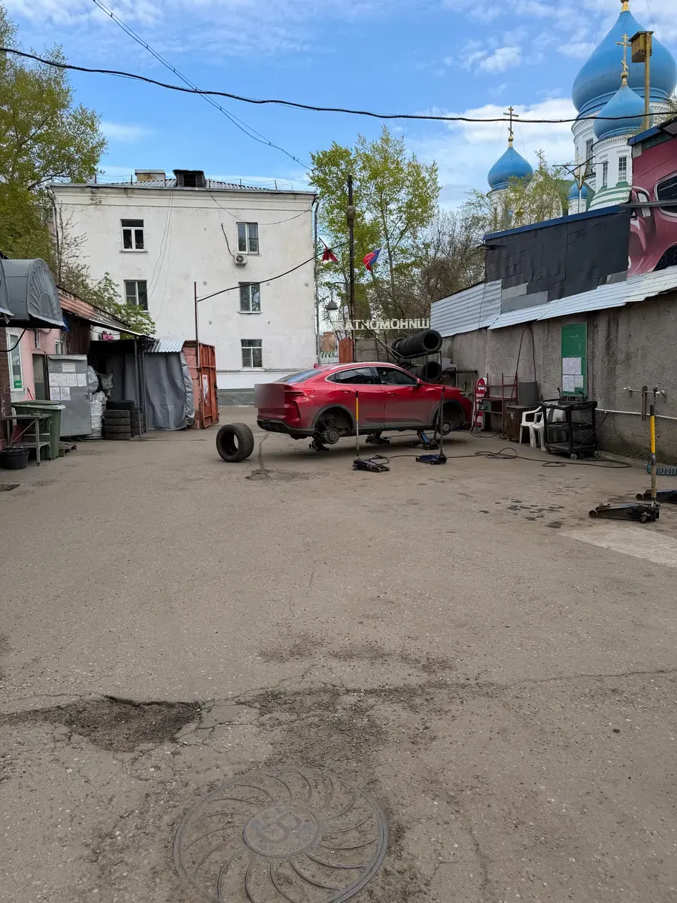
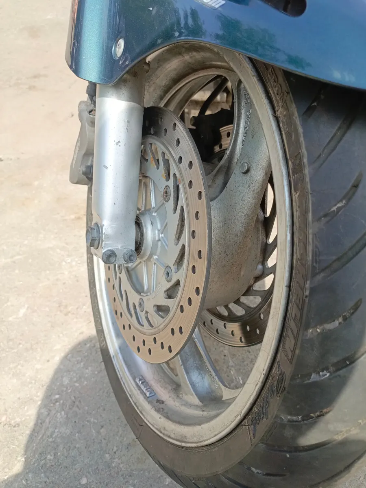

Шиномонтаж · Печатники, Москва
Шиномонтаж в Печатниках – быстро и без навязанных услуг
Клиенты пишут, что комплект переобувают за 10–15 минут. Работаем каждый день с 8:30 до 20:00.
- 5,0 на Яндекс.Картах, 164 отзыва
- Каждый день 08:30–20:00
- Оплата картой, хранение шин

Услуги и цены
Точную цену назовём при записи, до приезда.
Шиномонтаж
- Переобувка комплектаснять, перебортировать, поставитьуточнить
- Балансировка колёсуточнить
- Колёса мотоциклапереобуваем и балансируемуточнить
Ремонт и хранение
- Ремонт проколажгут или заплаткауточнить
- Сезонное хранение шинуточнить
- Утилизация шинуточнить
- Прокатка дисковуточнить
Как проходит
- 01
Записались и выбрали время
Онлайн или по телефону, за минуту.
- 02
Приехали к назначенному часу
Шоссейная улица, 78А, во дворе.
- 03
Сделали работу
Снятые шины складываем в пакеты.
- 04
Оплатили картой
Оплата картой принимается.



Что говорят клиенты
Быстро
В отзывах: комплект переобули за 10–15 минут.
Без навязанных услуг
Клиенты отмечают, что лишнего не предлагают.
Берём мотоколёса
Переобуем и отбалансируем колёса мотоцикла.
Колёса упакуем
Старые шины складываем в пакеты.
Отзывы с Яндекс.Карт
«Видели пит-стоп на Формуле 1? Так здесь намного быстрее! Переобуть машину по кругу заняло у ребят 12 минут.»
Yuri Belov · 17 апреля 2024
«Название полностью оправдывают, шиномонтаж быстрый, качественный и без навязывания дополнительных услуг.»
Георгий Марков · 4 мая 2025
«Заехал вечером в субботу, машин не было. Ребята вчетвером за 10 минут переобули колёса. Это самая быстрая переобувка моей жизни. Однозначно рекомендую»
Вюгар Г. · 22 ноября 2025
Отзывы с карточки на Яндекс.Картах, без правок.
Частые вопросы
Где вас найти?
Шоссейная улица, 78А, Москва, район Печатники, рядом с Николо-Перервинским монастырём. Заезд во двор.
Когда вы работаете?
Каждый день с 8:30 до 20:00.
Можно оплатить картой?
Да, оплата картой принимается.
Берёте колёса мотоциклов?
Да, переобуваем и балансируем колёса мотоцикла.
Можно оставить шины на хранение?
Да, есть хранение шин. Условия и цену назовём при записи.
Запишитесь на удобное время
- Адрес
- Шоссейная улица, 78А, Москва
- Часы
- Каждый день 08:30–20:00
- Телефон
- +7 (985) 450-35-06